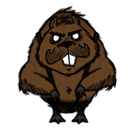

Woodie is the sixth unlockable character in Don't Starve (1600 XP, see Experience for more information on how to unlock him). He is a Canadian lumberjack with no known backstory and was introduced in the "Strange New Powers" update. He has Lucy the Axe in his inventory from the start of the game. He is one of the only two characters (the other being Wolfgang) able to transform his physical form, due to his curse. No explanation is given for this event.
Kevin (the lead developer), when asked in the Klei forums if Woodie was crazy or not, said this:
"Woodie is pretty level-headed most of the time. He's a bit of a lunkhead, because he spends most of his time chopping down trees and not reading books. He's a bit obsessed with wood, trees, and chopping. He also has an irrational hatred of birds. Like most Canadians, he apologises a lot. Other than the whole talks to his axe like it's a person thing, he's a pretty normal guy."[citation needed]
Woodie starts off with an axe named Lucy. Lucy is sentient and talks to Woodie, egging him on while chopping down Trees, and warning him about the curse (see below). Lucy talks in red text to differentiate from Woodie's white text. Lucy has infinite durability and chops down Trees much faster than the Axe and the Luxury Axe, and with fewer chops.
Curse
Werebeaver

Health
100
Damage
51
Attack Period
0.5
Running Speed
6.6
Special Ability
80% damage resistance Immune to freezing
If Woodie chops down too many Trees in a short space of time or if it is a Full Moon, he will transform into a Werebeaver. It does not matter which axe is used in the process, but it takes approximately 38 chops with Lucy to transform. In this Werebeaver form, the Map will be unavailable, and all of the HUD will disappear and be replaced by the Log Meter. The Log Meter will decay at a rate of 2 points every 2.5 seconds. To keep the meter up the player must consume any of the items listed below.
Log Meter Consumption Table
Log Meter (LM)
Living Log +50 LM
Boards +15 LM
Logs +10 LM
Saplings +10 LM
Berry Bush +10 LM
Spiky Bush +10 LM
Grass Tuft +10 LM
Twigs +5 LM
Pine Cones +2 LM
Cut Grass +1 LM
The Werebeaver has no inventory and will drop all items upon transformation, including Lucy. When the Log meter reaches 0, the player will spawn in the same spot, as Woodie, at the beginning of the next day, with 50 Health, 50 Hunger, and 50 Sanity. Any mobs aggressive against the Werebeaver will remain in place and also be aggressive towards Woodie, possibly killing him because of the low health.
The Werebeaver is able to chop down Trees, dig plants, mine Rocks, demolish Structures (like a Hammer would), dig Graves and Rabbit Holes, and fight mobs. His attack strength is equivalent to normal damage of a Tentacle Spike (51) and his beaver hide absorbs 80% of incoming damage. If the player destroys a Plugged Sinkhole they will not be able to travel down as a Werebeaver.
The Werebeaver has limited night vision and as such is immune to the Night Monster.
Tips
While in the Werebeaver state, the player should consider doing these things to maximize its effectiveness.
Killing Treeguards, which will probably spawn since the Werebeaver will be gnawing a lot of trees.
Mining Boulders to save on Pickaxes, picking up the drops as Woodie later.
Surviving Winter more easily, as the Werebeaver does not get cold. However, keeping the Log Meter up during this state will require many trees and other plants to be cut down.
Woodie has a beard, but he is unable to shave saying "A true lumberjack never shaves.".
Kevin said that his beard may not be made of hair.
That may be the reason he doesn't get an insulation bonus on Winter like Wilson or Webber does.
Woodie apparently hates birds or thinks they're evil.
While the regular meters are gone as a Werebeaver, Woodie can still raise his "naughtiness" rating and cause Krampus to arrive.
It appears that the Werebeaver has the same hunchback model as the Pigs, Merms and the Bunnymen.
Woodie's examination of a Clockwork Bishop suggests he either is, or was, Catholic ("It's been a while since my last confession.").
When Woodie examines Cut Grass, his response suggests that he has hay fever ("I think I might be allergic to this."). This is also suggested by his response to Grass Tuft ("It makes my eyes water.").
The Werebeaver's night vision is actually light emitted by the Werebeaver's model. This can be noted by the fact that friendly Pigs will not panic near it when in the dark.
Woodie is unique as he was the first character that has different examinations for all crock pot recipes instead of generic ones.
When struck by Lightning in the Reign of Giants DLC, Woodie, like most other characters, is shown to have bones in his hair. In addition to this, his beard seems to be part of his skull and the lightning's light has a more reddish hue.
Bugs
As a Werebeaver, if the player's Log Meter drops to 0 as a result of being hurt by monsters and is still being attacked when the player transforms back the normal HUD won't return; it will stay as the Werebeaver's HUD, but still work as the normal HUD. It reverts to normal after the player saves and exits then return again (or Woodie turns into the Beaver with 50 sanity).
If Woodie dies in Werebeaver form, when the next moon phase is a full moon he will appear as Woodie, but the screen will show the Werebeaver HUD. Reloading the world should fix this.
When a full moon occurs, when Woodie is hit during his transforming stage, Lucy will say a transforming quote, but Woodie doesn't actually turn into the Werebeaver.
When Woodie changes back to his human form, quickly getting in and out of the game will result in Woodie still being in Werebeaver form, but the game plays as if Woodie were on 50 sanity
As a Werebeaver, if the Log Meter hits 0 and he gnaws an item that replenishes it at the same time (possibly causing the Werebeavers death sound effect to activate and sometimes the music to stop), he will be unable to faint and revert back. This will end if the player either reloads, which will return Woodie to normal with all stats full, or if the meter is refilled and then once again returned to 0 (he will only revert normally if the meter is refilled all the way to 100).
If the player saves at the same time Woodie faints, upon reloading Woodie's stats will be full.
Sometimes if the player is wearing a Backpack when the curse activates and the inventory drops to the ground, the backpack will disappear. However, the next time the curse activates, the backpack may appear again when the player's inventory drops to the ground.
Sometimes, after reverting from Werebeaver form, Woodie will make Werebeaver sounds when getting hurt.


")
.PNG.html "Werebeaver's Menu (Fixed).PNG (354 KB)")
")
")


{kind=link}
{kind=link}
{kind=link}
{kind=link}
{kind=link}
{kind=link}
{kind=link}
{kind=link}
{kind=link}
{kind=link}
{kind=link}